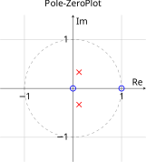
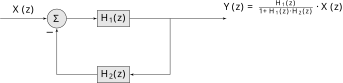
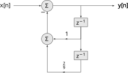

Lecture 21
DT System Analysis using Z-Transform
2026-04-14
Introduction
The transfer function gives us a 4th way to represent DT LTI systems:
Recall a few important results from the last lecture and related consequences:
The values of \(z\) for which \(H(z) = 0\) are called the zeros, \(\beta_k\).
The singularities of \(H(z)\) are called the poles, \(\alpha_k\).
The pole-zero structure is typically plotted or sketched relative to the unit circle, with zeros indicated by a small circle, poles by a small cross, and duplicate/repeated roots indicated by an integer in parenthesis (#). We saw several examples last time.
If a system is causal, \(M \leq N\) and the ROC of the transfer function is of the form \(|z| > \gamma\), then all poles will be inside the circle of radius \(\gamma\), i.e. the outermost pole is at radius \(\gamma = \underset{k}{\operatorname{argmax}} |\alpha_k|\).
If the system is stable, the ROC includes the unit circle. This implies \(\gamma < 1\) and all poles are inside the unit circle.
If a system is stable, then it has a frequency response \[H\left( e^{j\omega}\right) = \left. H(z) \right|_{z = e^{j\omega}}\] the transfer function evaluated on the unit circle.
DT System Analysis
As indicated in the figure above, DT system analysis revolves around the transfer function. Given an LCCDE, impulse response, or block diagram, we can convert it to an equivalent transfer function and, if stable, to a frequency response. We can then proceed depending on the given components of a problem and the desired outputs.
We have several analysis methods for DT systems at this point. Below is a decision tree I recommend. Note, this only indicates which technique is generally most efficient. Multiple analysis methods are often possible, with the bilateral z-transform and convolution being the most generally applicable, but often cumbersome to employ.
The sweet spot for using the z-transform is causal systems with causal inputs, since the one-sided transform can be used and the ROC does not impact the procedure. Equally straightforward is analysis of causal and stable systems with sinusoidal inputs via the transfer function to frequency response transformation. In general, when the system is non-causal and/or the input is non-causal and not sinusoidal, you are forced to use either bilateral Z-transforms and keep careful track of the ROC, or just use convolution. However, if the system is non-causal but stable and the input (causal or not) has a Fourier transform, you can use Fourier transform techniques. This has the advantage of not requiring careful treatment of the ROC.
Let look at some examples to get a feel for how the decision tree works.
Example 1
Given the LCCDE with zero auxiliary conditions:
\[y[n] = -\frac{1}{8}y[n-2] + \frac{1}{4}y[n-1] + x[n] - x[n-1]\]
Find the transfer function, sketch the pole-zero plot, and determine if the system is stable. If they exist, find the outputs when the inputs are:
\(x_1[n] = \left(\frac{3}{4}\right)^n\, u[n]\)
\(x_2[n] = \cos\left(\frac{\pi}{6}\, n\right)\)
\(x_3[n] = \cos\left(\frac{\pi}{6}n\right)\, u[n]\)
If they do not exist, indicate why.
Solution Part I
To find the transfer function we can take the z-transform and use the index shift property from last lecture.
\[\begin{align*} Y(z) &= -\frac{1}{8}z^{-2}\, Y(z) + \frac{1}{4}z^{-1}\, Y(z) + X(z) - z^{-1}\, X(z)\\ \left(1 - \frac{1}{4}z^{-1} + \frac{1}{8}z^{-2}\right)\, Y(z) &= \left(1- z^{-1}\right)\, X(z) \\ H(z) = \frac{Y(z)}{X(z)} &= \frac{1- z^{-1}}{1 - \frac{1}{4}z^{-1} + \frac{1}{8}z^{-2}} = \frac{z(z-1)}{z^2 - \frac{1}{4}z + \frac{1}{8}} \end{align*}\]
Since \(Q(z) = z^2 - \frac{1}{4}z + \frac{1}{8}\) has complex roots \(\frac{1}{8} \pm j \frac{\sqrt{7}}{8}\), the poles are at those locations. The pole-zero plot then looks like

The magnitude of the poles (radius in complex plane) is \(\lvert \frac{1}{8} \pm j \frac{\sqrt{7}}{8} \rvert \approx 0.3535 < 1\), thus the system is clearly stable. Therefore, in the decision tree, we are dealing with a causal, stable system.
Solution Part II
Now, we need to find the outputs, given the inputs. Input 1, \(x_1[n] = \left(\frac{3}{4}\right)^n\, u[n]\), is casual and has finite energy, thus has both a one-sided z-transform and a Fourier transform. We could use either to do the analysis, but lets use the z-transform. The Fourier approach is very similar. Since both system and inputs are causal, the output is causal and we can drop the ROC.
Using the table \(X_1(z) = \frac{z}{z-\frac{3}{4}}\). From the convolution property then
\[Y_1(z) = H(z)\cdot X_1(z) = \frac{z(z-1)}{z^2 - \frac{1}{4}z + \frac{1}{8}} \cdot \frac{z}{z-\frac{3}{4}} = \frac{z^2(z-1)}{\left(z-\frac{3}{4} \right) \left( z^2 - \frac{1}{4}z + \frac{1}{8} \right)}\]
to find \(y_1[n]\) we need to take the one-sided, inverse z-transform of \(Y_1(z)\). Using the partial fraction expansion
\[\frac{Y_1(z)}{z} = \frac{A}{z-\frac{3}{4}} + \frac{Bz + C}{z^2 - \frac{1}{4}z + \frac{1}{8}}\] where
\[A = \left. \frac{z(z-1)}{z^2 - \frac{1}{4}z + \frac{1}{8}} \right\rvert_{z = \frac{3}{4}} = \frac{\frac{3}{4}(\frac{3}{4}-1)}{\frac{9}{16} - \frac{3}{16} + \frac{2}{16}} = \frac{-\frac{3}{16}}{\frac{8}{16}} = -\frac{3}{8}\]
To find \(C\), let \(z= 0\)
\[\frac{A}{-\frac{3}{4}} + \frac{C}{\frac{1}{8}} = \frac{0(0-1)}{\left(0-\frac{3}{4} \right) \left( 0 - \frac{1}{4}0 + \frac{1}{8} \right)} = 0\]
Solving this equation for \(C\) and substituting for \(A\) gives \(C = -\frac{1}{16}\). To find \(B\) consider \(Y_1(z)\) as \(z \rightarrow \infty\). Rewrite in negative powers of \(z\)
\[Y_1(z) = \frac{A}{1-\frac{3}{4}z^{-1}} + \frac{B + Cz^{-1}}{1 - \frac{1}{4}z^{-1} + \frac{1}{8}z^{-2}} = \frac{1(1-z^{-1})}{\left(1-\frac{3}{4}z^{-1} \right) \left( 1 - \frac{1}{4}z^{-1} + \frac{1}{8}z^{-2} \right)}\] and taking the limit, we obtain \(A + B = 1\). Solving for \(B\) and substituting gives \(B = 1-A = 1+\frac{3}{8} = \frac{11}{8}\).
We can now employ the table to do the inverse transform. The first term is already in a form that corresponds to the table when combined with the linearity property:
\[\mathcal{Z}_1^{-1}\left\{ \frac{-\frac{3}{8}z}{z-\frac{3}{4}} \right\} = -\frac{3}{8}\left( \frac{3}{4}\right)^n\, u[n]\]
To match the second term to a table entry, we can write it as
\[\frac{z(Dz + E)}{z^2 + 2az + |\gamma|^2}\] where \(D=\frac{11}{8}\), \(E=-\frac{1}{16}\), \(a=-\frac{1}{8}\), \(|\gamma|^2 = \frac{1}{8}\). Then \(\mathcal{Z}_1^{-1}\) for the second term is a damped causal sinsuoid.
\[r |\gamma|^n \cos(\omega_0 n + \theta) u[n]\] where
\[r = \left[\frac{D^2|\gamma |^2 + E^2-2DaE}{|\gamma |^2 - a^2}\right]^{\frac{1}{2}},\quad \omega_0 = \cos^{-1}\left(\frac{-a}{|\gamma |} \right), \quad \theta = \tan^{-1}\left(\frac{Da-E}{D(|\gamma |^2-a^2)^{\frac{1}{2}}}\right)\]
Another approach is to write the second term as
\[\mathcal{Z}_1 \left\{ F|\gamma|^n\cos(\omega_0 n)\, u[n] + G|\gamma|^n\sin(\omega_0 n)\, u[n]\right\} = \frac{Fz(z-|\gamma |\cos(\omega_0))}{z^2 -2|\gamma |\cos(\omega_0)\, z + |\gamma |^2} + \frac{G |\gamma |\sin(\omega_0)z}{z^2 -2|\gamma |\cos(\omega_0)\, z + |\gamma |^2}\] Comparing this to
\[\frac{\frac{11}{8}z^2 -\frac{1}{16}z}{z^2 - \frac{1}{4}z + \frac{1}{8}}\] we obtain the equations
\[\begin{align*} F &= \frac{11}{8}\\ |\gamma | &= \frac{1}{2\sqrt{2}}\\ \cos(\omega_0) &= \frac{\sqrt{2}}{4}\\ \sin(\omega_0) &= \frac{\sqrt{7}}{2\sqrt{2}}\\ G &= \frac{-\frac{1}{16} + F|\gamma | \cos(\omega_0)}{|\gamma | \sin(\omega_0)} = \frac{7}{8 \sqrt{7}} \end{align*}\]
We can of course also use the definition of the inverse with the residue theorem to obtain
\[y_1[n] = -\frac{3}{8}\left( \frac{3}{4}\right)^n\, u[n] + H\left(\frac{1}{8} + j \frac{\sqrt{7}}{8}\right)^n\, u[n] + I \left(\frac{1}{8} - j \frac{\sqrt{7}}{8}\right)^n\, u[n]\] where \(H\) and \(I\) are the residues for the complex singularities.
\[H = \left. \frac{z(z-1)}{\left(z-\frac{3}{4}\right)\cdot \left(z-\left(\frac{1}{8} - j \frac{\sqrt{7}}{8}\right)\right)} \right|_{z=\left(\frac{1}{8} + j \frac{\sqrt{7}}{8}\right)} = \frac{7 + j\cdot 3\cdot\sqrt(7)}{7 + j\cdot 5\cdot\sqrt(7)} \approx 0.6785 - j\cdot 0.1654\]
\[I = \left. \frac{z(z-1)}{\left(z-\frac{3}{4}\right)\cdot \left(z-\left(\frac{1}{8} + j \frac{\sqrt{7}}{8}\right)\right)} \right|_{z=\left(\frac{1}{8} - j \frac{\sqrt{7}}{8}\right)} = \frac{-7 + j\cdot 3\cdot\sqrt(7)}{-7 + j\cdot 5\cdot\sqrt(7)} \approx 0.6785 + j\cdot 0.1654\]
While it might not be apparent, all three of these solutions for \(y_1[n]\) are mathematically equivalent:
\[\begin{align*} y_1[n] &= -\frac{3}{8}\left( \frac{3}{4}\right)^n\, u[n] + r |\gamma|^n \cos(\omega_0 n + \theta) u[n]\\ y_1[n] &= -\frac{3}{8}\left( \frac{3}{4}\right)^n\, u[n] + F|\gamma|^n\cos(\omega_0 n)\, u[n] + G|\gamma|^n\sin(\omega_0 n)\, u[n]\\ y_1[n] &= -\frac{3}{8}\left( \frac{3}{4}\right)^n\, u[n] + H\left(\frac{1}{8} + j \frac{\sqrt{7}}{8}\right)^n\, u[n] + I \left(\frac{1}{8} - j \frac{\sqrt{7}}{8}\right)^n\, u[n] \\ \end{align*}\]
What about when the input is \(x_2[n] = \cos\left( \frac{\pi}{6}n\right)\)? This is a non-causal sinusoidal input. Since the system is stable, it has a frequency response. This means we can use Fourier sinusoidal analysis to find \(y_2[n]\):
\[y_2[n] = \left| H\left( e^{j\omega} \right) \right|_{\omega = \frac{\pi}{6}} \cdot \cos\left( \frac{\pi}{6}n + \theta\right)\] where
\[\left| H\left( e^{j\omega} \right) \right|_{\omega = \frac{\pi}{6}} = \left| \frac{e^{j\frac{\pi}{6}}\left(e^{j\frac{\pi}{6}} - 1\right)}{e^{j\frac{\pi}{3}} - \frac{1}{4}e^{j\frac{\pi}{6}}+ \frac{1}{8}}\right| \approx 0.6118\] and \[\theta = \left. \angle H\left( e^{j\omega} \right) \right|_{\omega = \frac{\pi}{6}} = \left. \angle H\left( e^{j\omega} \right) \right|_{\omega = \frac{\pi}{6}} = \angle \frac{e^{j\frac{\pi}{6}}\left(e^{j\frac{\pi}{6}} - 1\right)}{e^{j\frac{\pi}{3}} - \frac{1}{4}e^{j\frac{\pi}{6}} + \frac{1}{8}} \approx 1.289 \mbox{ rad}\]
Note how much easier this is than blindly using the z-transform. What if the system were unstable?, then the solution would not exist. Equivalently in the time domain, the convolution sum would diverge.
What about when the input is \(x_3[n] = \cos\left(\frac{\pi}{6}n\right)\, u[n]\). This seemingly similar signal is a causal sinusoidal input. We can use either the Z-transform or the Fourier Transform to solve for \(y_3[n]\), the later because the system is stable.
\[y_3[n] = \mathcal{Z}^{-1}\left\{ H(z)\cdot X_3(z)\right\}\] where \(X_3(z) = \frac{z\left(z-\cos\left(\frac{\pi}{6}\right)\right)}{z^2 - 2\cos\left(\frac{\pi}{6}\right)\, z + 1}\), or using Fourier \[y_3[n] = \mathcal{F}^{-1}\left\{ H\left(e^{j\omega}\right)\cdot X_3\left(e^{j\omega}\right)\right\}\] although the z-transform approach has fewer terms. If the system were unstable we could only use the z-transform. The key issue is that both the system and input are causal, thus only one-sided Z-transforms are required.
Analyzing Block Diagrams
Recall from ECE 2714 the basic motifs of DT block diagrams. These are simplified using the concept of the transfer function.
A single block.
Block diagram for a single DT system block in z-domain. Using the convolution property, the output is just the product of the transfer function and the input. A series connection of two blocks
Block diagram for a series connection of DT system blocks in z-domain. Using the convolution property, the overall transfer function is the product of the individual transfer functions. A parallel connection of two blocks
Block diagram for a parallel connection of DT system blocks in z-domain. Using the convolution property, the overall transfer function is the sum of the individual transfer functions. A feedback connection

Block diagram for a feedback connection of DT system blocks in z-domain. Using the convolution property one can derive the overall transfer function as \(H(z) = \frac{H_1(z)}{1 + H_1(z)\cdot H_2(z)}\). Note the feedback is negative (the minus sign on the feedback summation input). This is significantly easier in the z-domain compared to the time domain since convolution is now multiplication and inverse systems are division.
As in CT, these can be used in various combinations. The most common building blocks are the gain/multiplier by a constant \(K\), with transfer function \(H(z) = K\)
and the unit delay \(H(z) = z^{-1}\).
We will use these building blocks extensively when discussing the implementation of digital filters.
Example 2
Given the block diagram

Find the transfer function \(H(z)\).
Determine if the system is stable.
Find \(y[n]\) if \(x[n] = \left(\frac{1}{3}\right)^n\, u[n]\).
There are multiple ways to find \(H(z)\). Lets combine the feedback blocks into a single feedback block,
The overall transfer function, using the feedback motif, is then: \[H(z) = \frac{1}{1 + H_2(z)} = \frac{1}{1 + z^{-1} + \frac{2}{9}\, z^{-2}} = \frac{z^2}{z^2 + z + \frac{2}{9}}\]
To determine the stability we examine the roots of \(Q(z) = z^2 + z + \frac{2}{9} = \left(z+\frac{2}{3} \right)\cdot \left(z+\frac{1}{3} \right)\) to find the poles \(-\frac{2}{3}\) and \(-\frac{1}{3}\), whose magnitude is less than 1. Thus the system is stable. Since the output only depends on the current input and the two precious outputs, it is casual as well.
Now the input is the causal signal \(x[n] = \left(\frac{1}{3}\right)^n\, u[n]\). Thus, in our decision tree we are in the sweet spot for one-sided z-transform analysis. From the table of transforms \[X(z) = \frac{z}{z-\frac{1}{3}}\] Thus \[Y(z) = H(z)\cdot X(z) = \frac{z^2}{z^2 + z + \frac{2}{9}} \cdot \frac{z}{z-\frac{1}{3}} = \frac{z^3}{\left(z+\frac{2}{3}\right)\cdot \left(z+\frac{1}{3}\right) \cdot \left(z-\frac{1}{3}\right)}\]
To find \(y[n]\) we do the partial fraction expansion
\[\frac{Y(z)}{z} = \frac{A}{z+\frac{2}{3}} + \frac{B}{z+\frac{1}{3}} + \frac{C}{z-\frac{1}{3}} = \frac{z^2}{\left(z+\frac{2}{3}\right)\cdot \left(z+\frac{1}{3}\right) \cdot \left(z-\frac{1}{3}\right)}\] where
\[A = \left. \frac{z^2}{\left(z+\frac{1}{3}\right) \cdot \left(z-\frac{1}{3}\right)} \right|_{z= -\frac{2}{3}} = \frac{4}{3}\]
\[B = \left. \frac{z^2}{\left(z+\frac{2}{3}\right)\cdot \left(z-\frac{1}{3}\right)} \right|_{z= -\frac{1}{3}} = -\frac{1}{2}\]
\[C = \left. \frac{z^2}{\left(z+\frac{2}{3}\right)\cdot \left(z+\frac{1}{3}\right)} \right|_{z=\frac{1}{3}} = \frac{1}{6}\]
Then using linearity and the table we get
\[y[n] = A\left(-\frac{2}{3}\right)^n\, u[n] + B\left(-\frac{1}{3}\right)^n\, u[n] + C\left(\frac{1}{3}\right)^n\, u[n]\]
Note we could not use Fourier analysis in this case since the input does not have a DT Fourier transform.